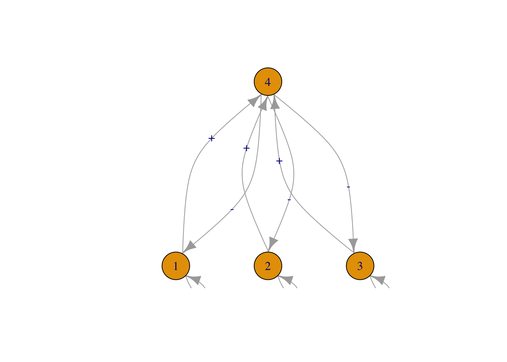
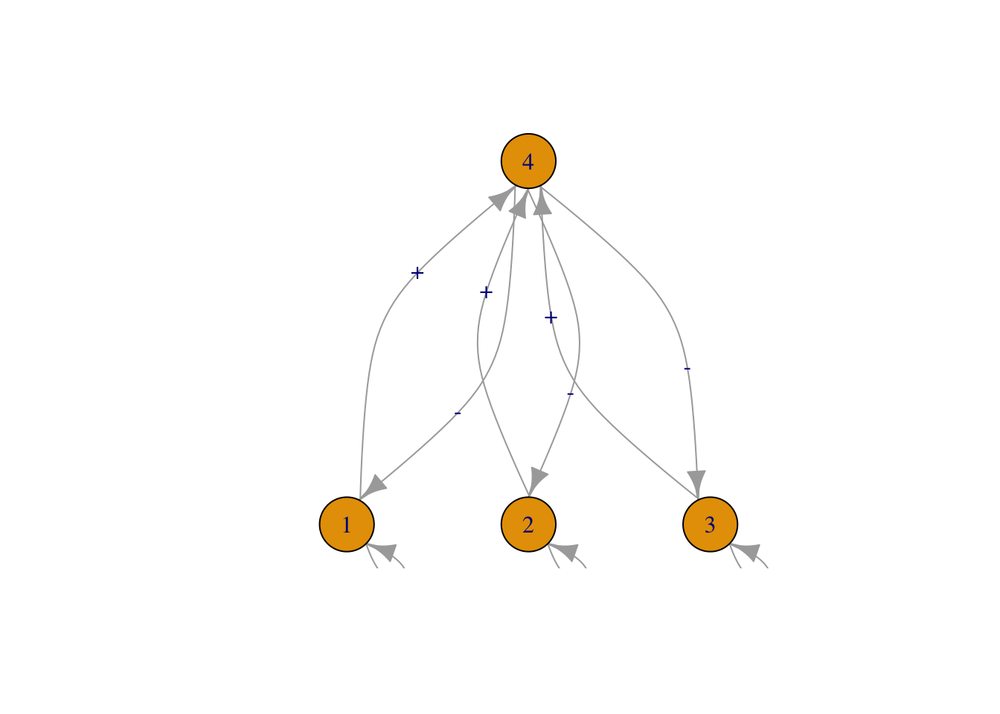
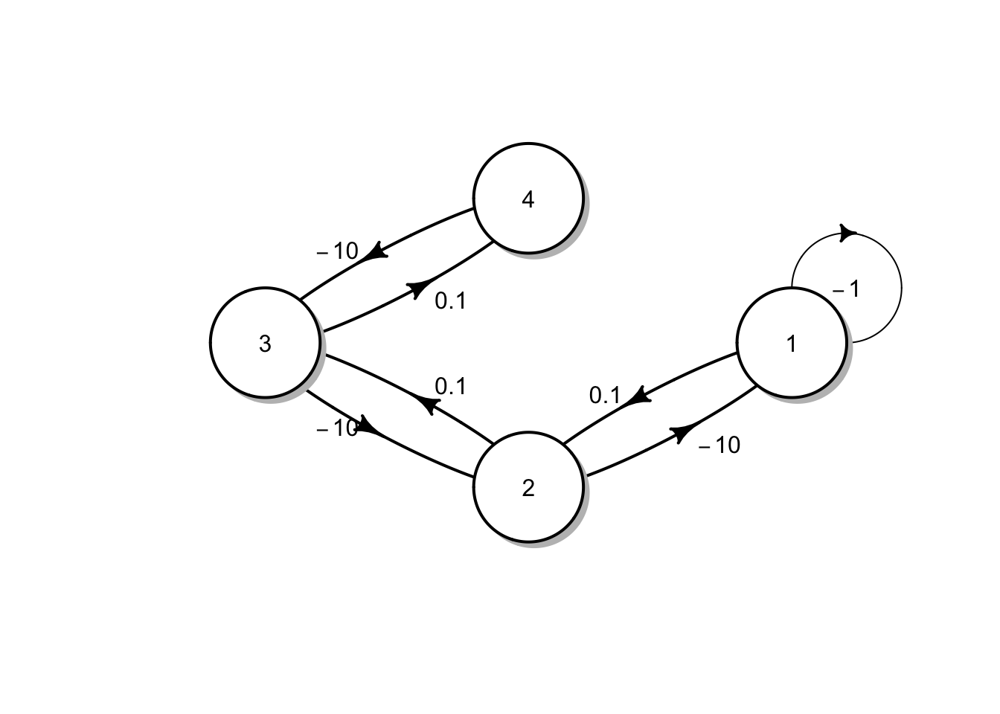

12 Food webs
A food web is a real or a model of a set of feeding relations among species or functional groups. This chapter has two foci, (i) a very brief introduction to multi-species webs as networks, and (ii) a re-examination of old lessons regarding the effect of food chain length on a web’s dynamical properties.

Figure 12.1: A food web is a map of feeding relations. Here, snails (S) and invertebrates (I) feed on algae, and fish, F, feed on invertebrates and algae. We can represent this as a graph or a matrix.
12.1 Food Web Characteristics
We need language to describe the components of a food web, such as links and nodes, and we also need language to describe the properties of a web as a whole. Generally speaking, networks such as food webs have emergent properties (May 2006), such as the number of nodes in the network. Emergent properties are typically considered to be nothing more than characteristics which do not exist at simpler levels of organization. For instance, one emergent property of a population is its density, because population density cannot be measured in an individual; that is why density is an emergent property.64 While all food web models are based on simple pairwise interactions, the resulting emergent properties of multispecies webs quickly become complex due to indirect interactions and coupled oscillations (Berlow et al. 2004; Vandermeer 2006). In addition, any extrinsic factor (e.g., seasonality) that might influence species interactions may also influence the emergent properties of food webs.
A few important network descriptors and emergent properties include,
- Node A point of connection among links, a.k.a. trophospecies; each node in the web may be any set of organisms that share sufficiently similar feeding relations; in Fig. 12.1, \(F\) may be a single population of one species, or it may be a suite of species that all feed on both \(I\) and \(A\).
- Link A feeding relation; a connection between nodes or trophospecies; may be directed (one way) or undirected. A directed link is indicated by an arrow, and is the effect (\(+,\,-\)) of one species on another. An undirected link is indicated by a line (no arrow head), and is merely a connection, usually with positive and negative effects assumed, but not quantified.
- Connectance The proportion of possible links realized. Connectance may be based on either directed, \(C_{D}\), or undirected, \(C_{U}\), links. For Fig. 12.1 these would be \[\begin{gather*} C_{D}=\frac{L}{S^{2}}=\frac{8}{16}=0.5 \\ C_{U}=\frac{L}{\left(S^2-S\right)/2}=\frac{4}{6}=0.67 \end{gather*}\] where \(S\) is the number of species or nodes.
- Degree distribution, \(\mathrm{Pr}(i)\) The probability that a randomly chosen node will have degree \(i\), that is, be connected to \(i\) other nodes (May 2006). In Fig. 12.1, \(S\) is of degree 1 (i.e., is connected to one other species). \(F\) and \(I\) are of degree 2, and \(A\) is of degree 3. If we divide through by the number of nodes (4, in Fig. 12.1), then the degree distribution consists of the probabilities \(\mathrm{Pr}\left(i\right)=\{0.25,\,0.5,\,0.25\}\). As webs increase in size, we can describe this distribution as we would a statistical distribution. For instance, for a web with randomly placed connections, the degree distribution is the binomial distribution (Cohen, Briand, and Newman 1990).
- Characteristic path length Sometimes defined as the average shortest path between any two nodes (Dunne, Williams, and Martinez 2002). For instance, for Fig. 12.1, the shortest path between \(S\) and \(A\) is 1 link, and between \(A\) and \(I\) is 2 links. The average of all pairwise shortest paths is \((1+1+1+1+2+2)/6=1.\bar{3}\). It is also sometimes defined as the average of all paths between each pair of nodes.
- Modularity, Compartmentation The degree to which subsets of species are highly connected or independent of other species. This tends to arise in consumer-resource interactions (Thébault and Fontaine 2010).
To calculate modularity in a food web, first assume each species interacts with itself. Next, calculate the proportion of shared interactions, \(p_{ij}\) for each pair of species, by comparing the lists of species with which each species in a pair interacts. The numerator of \(p_{ij}\) is the number of species with which both of the pair interact. The denominator is the total number of different species with which either species interacts.
As an example, let’s calculate this for the above food web (Fig. 12.1). \(S\) interacts with \(S\) and \(A\), \(I\) interacts with \(I\), \(A\), and \(F\). Therefore, \(S\) and \(I\) both interact with only \(A\), whereas, together, \(S\) and \(I\) interact with \(S\), \(I\), \(A\), and \(F\). The proportion, \(p_{ij}\), therefore is \(1/4 = 0.25\). We do this for each species pair.
Next we sum the proportions, and divide the sum by the maximum possible number of undirected links, \(C_U\).
\[\begin{matrix} & S & I & F\\ \hline A&2/4&3/4&3/4\\ S& &1/4&1/4\\ I& & &3/3 \end{matrix}\]\[\begin{align*} C_{I}&=\frac{\sum_{i=1}^{S-1}\sum_{j=i+1}^{S}p_{ij}}{\left(S^2-S\right)/2}\\ &=3.5/6\\ &=0.58 \end{align*}\]
To reiterate: For any pair of species, \(i\) and \(j\) (\(i\neq j\)), \(p_{ij}\) is the proportion of shared interactions, calculated from the number of species that interact with both species \(i\) and \(j\), divided by the number of species that interact with either species \(i\) or species \(j\). As above, \(S\) is the number of species or nodes in the web.
- Nestedness the degree to which specialists make connections that generalists do too. A completely nested network is one in which we can rank species by the number of interactions, and find that species that interact with fewer other species are always interacting with species that generalists also interact with. This tends to arise in plant-pollinator networks (Thébault and Fontaine 2010).
- Motif A repeating pattern; most commonly, a unique set of unidirectional patterns of consumption (Fig. 12.2). A motif profile of a species is the variety of motifs that that species is part of, and the relative frequency with which they play each role.
- Small world architecture The degree to which characteristic path length, \(L\), grows with the logarithm of the number of nodes in the web, \(N\), \[L \propto log(N)\] This occurs when nodes are connected via a small number of links through a node with a large number of connections. This occurs in social networks when individuals are connected via shared acquaintances.
Figure 12.2: There are 13 different possible motifs for three species. These links record only consumption. For instance, S1 is a simple linear food chain and S4 is a single species that is consumed by two other species. motifs D1-D8 all include mutual consumption. This is likely to occur between species in the same guild, and when adults of one feed on juveniles of another.
Trophic level, trophic position may simply be categorized as basal, intermediate or top trophic positions. Basal positions are those in which the trophospecies feed on no other species. The top positions are those in which the trophospecies are fed upon by nothing. One can also calculate a quantitative measure of trophic level. This is important in part because omnivory, something rampant in real food webs, complicates identification of a trophic level. We can calculate trophic level for the top predator, \(F\) (Fig. 12.1), and let us assume that \(F\) gets two-thirds of what it needs from \(I\), and gets one-third from \(A\). \(I\) itself is on the second trophic level, so given that, the trophic level of \(P\) is calculated as \[\begin{equation*} T_{i}=1+\sum_{j=1}^{S}T_{j}p_{ij}=1+\left(2\left(0.67\right)+1\left(0.33\right)\right)=2.67 \end{equation*}\] where \(T_{i}\) is the trophic level of species \(i\), \(T_{j}\) is the trophic level of prey species \(j\), and \(p_{ij}\) is the proportion of the diet of predator \(i\) consisting of prey \(j\).
Omnivory Feeding on more than one trophic level; it is not merely feeding on different species or resources.
Intraguild predation A type of omnivory in which predation occurs between consumers that share a resource; in Fig. 12.1 \(F\) and \(I\) share prey \(A\). When \(F\) gets most of its energy from \(I\), we typically refer to that as omnivory; when \(F\) gets most of its energy from \(A\), we typically refer to that as intraguild predation because two species that share a resource occasionally eat each other.
This list of food web descriptors is a fine start but is by no means exhaustive.
12.2 Food chain length
There are many interesting questions about food webs that we could address; let us address one that has a long history, and as yet, no complete answer: What determines the length of a food chain? Some have argued that chance plays a large role (Cohen, Briand, and Newman 1990; Hubbell 2001; Williams and Hurst 2000), and others have shown that area (MacArthur and Wilson 1967; Rosenzweig 1995) or ecosystem size (Post 2002) may play roles. The explanation that we will focus on here is dynamical stability. Communities with more species had been hypothesized to be less stable, and therefore less likely to persist and be observed in nature. Stuart Pimm and John Lawton (Pimm and Lawton 1977) extended this work by testing whether food chain length could be limited by the instability of long food chains.
12.2.1 Multi-species Lotka–Volterra notation
A many-species Lotka–Volterra model can be represented in a very compact form, \[\begin{equation} \tag{12.1} \frac{d X_{i}}{d t}=X_{i}\left(b_{i}+\sum_{j=1}^{S}a_{ij}X_{j}\right) \end{equation}\] where \(S\) is the number of species in the web, \(b_i\) is the intrinsic rate of increase of species \(i\) (i.e., \(r_i\)), and \(a_{ij}\) is a per capita effect of species \(j\) on species \(i\).
When \(i=j\), \(a_{ij}\) refers to an intraspecific effect, which is typically negative. Recall that in our earlier chapters on competition, we used \(\alpha_{ii}\) to represent intraspecific per capita effects. Here for notational convenience, we leave \(i\) and \(j\) in the equation, realizing that \(i=j\) for intraspecific interactions. Further, we let \(a_{ij}\) be any sign, either positive or negative, and sum the effects. If we let \(X=N\), \(b=r\), and \(a=r \alpha\), then the following are equivalent: \[\begin{gather*} \dot{N_1} =r_1N_1\left(1-\alpha_{11}N_1 - \alpha_{12}N_2\right)\\ \dot{X} =X_1\left(b_1+a_{11}X_1+a_{12}X_2 \right) \end{gather*}\] The notation in (12.1) is at once both simple and flexible. When \(a_{ij}\) is negative, it may represent competition or the effect of a predator, \(j\), on its prey, \(i\). When \(a_{ij}\) is positive, it may represent mutualism or the effect of prey~\(j\) on a predator~\(i\).
12.2.2 Background
In the early and mid-1970’s, Robert May and others demonstrated that important predictions could be made with relatively simple Lotka–Volterra models (May 1973), and this work still comprises an important compendium of lessons for ecologists today (May 2006). May used simple Lotka–Volterra models to show that increasing the number of species in a food web tended to make the food web less stable (May 1973, 1972). In species-rich webs, species were more likely to become extinct. Further, he showed that the more connections there were among species in the web (higher connectance), and the stronger those connections (higher interaction strength), the less stable the web. At the time, this ran counter to a prevailing sentiment that more diverse ecosystems were more stable, and led to heated discussion. 

Figure 12.3: Three of the six webs investigated by Pimm and Lawton (1977). Left to right, these correspond to Pimm and Lawton (1977) Figs. 1A, E, and B. All basal species exhibit negative density dependence.
May used specific quantitative definitions of all of his ideas. He defined connectance as the proportion of interactions in a web, given the total number of all possible directed interactions (i.e., directed connectance). Thus a linear food chain with four species (Fig. 12.3, web A), and intraspecific competition in the basal (bottom) species would have a connectance of \(4/16=0.25\). May’s definition of interaction strength was the square root of the average of all \(a_{ij}^2\) (\(i \neq j\)), \[\begin{equation} \tag{12.2} I =\sqrt{ \frac{\sum_{i=1}^S\sum_{j=1, i \neq j}^S a_{ij}}{S^2-S}}. \end{equation}\] Squaring the \(a_{ij}\) focuses on magnitudes, putting negative and positive values on equal footing.
An important component of May’s work explored the properties of randomly connected food webs. At first glance this might seem ludicrous, but upon consideration, we might wonder where else one could start. Often, simpler (in this case, random) might be better. The conclusions from the random connection models act as null hypotheses for how food webs might be structured; deviations from May’s conclusions might be explained by deviations from his assumptions. Since this work, many ecologists have studied the particular ways in which webs in nature appear non-random.
One conclusion May derived was a threshold between stability and instability for random webs, defined by the relation \[\begin{equation} \tag{12.3} I\left( S C_D \right)^{1/2} = 1 \end{equation}\] where \(I\) is the average interaction strength, \(S\) is the number of species, and \(C_D\) is directed connectance. If \(I\left( S C \right)^{1/2} > 1\), the system tended to be unstable (Fig. 12.4). Thus, if we increase the number of species, we need to decrease the average interaction strength if we want them to persist. The larger and more tightly connected (larger \(I\), \(S\), and \(C_D\)) the web, the more likely it was to come crashing down. Therefore, if longer food chains were longer by virtue of having more species, they would be less stable because of the extra species, if for no other reason.
Figure 12.4: Relation between the average interaction strength and the number of species able to coexist (here directed connectance is \(C_D = 0.3\)). The line represents the maximum number of species that are predicted to be able to coexist at equilibrium. Fewer species could coexist, but, on average, more species cannot coexist at equilibrium.
Pimm and Lawton felt that it seemed reasonable that long chains might be less stable also because predator-prey dynamics appear inherently unstable, and a connected series of unstable relations seemed less likely to persist than shorter chains. They tested whether food chain length per se, and not the number of species, influenced the stability of food chains. Another question they addressed concerned omnivory. At the time, surveys of naturally occurring food webs had indicated that omnivory was rare (Pimm and Lawton 1978). Pimm and Lawton tested whether omnivory stabilized or destabilized food webs (Pimm and Lawton 1977, 1978).
Like May, Pimm and Lawton (Pimm and Lawton 1977) used Lotka–Volterra models to investigate their ideas. They designed six different food web configurations that varied food chain length, but held the number of species constant (Fig. 12.3). For each food web configuration, they varied randomly interaction strength and tested whether an otherwise randomly structured food web was stable. Their food webs included negative density dependence only in the basal species.
Pimm and Lawton concluded that (i) shorter chains were more stable than longer chains, and (ii) omnivory destabilized food webs. While these conclusions have stood the test of time, Pimm and Lawton failed to highlight another aspect of their data — that omnivory shortened return times for those webs that were qualitatively stable (Fig. 12.10). Thus, omnivory could make more stable those webs that it didn’t destroy. Subsequent work has elaborated on this, showing that weak omnivory is very likely to stabilize food webs (McCann, Hastings, and Huxel 1998).
12.3 Implementing Pimm and Lawton’s Methods
Here we use R code to illustrate how one might replicate, and begin to extend, the work of Pimm and Lawton (Pimm and Lawton 1977).
In previous chapters, we began with explicit time derivatives, found partial derivatives and solved them at their equilibria. Rather than do all this, Pimm and Lawton bypassed these steps and went straight to the evaluated Jacobian matrix. They inserted random estimates for the elements of the Jacobian into each non-zero element in the food web matrix. These estimates were constrained within (presumably) reasonable limits, given large less abundant predators and small more abundant prey.
Their methods followed this approach.
- Specify a food web interaction matrix.65
- Include negative density dependence for basal species only.
- Set upper and lower bounds for the effects of predators on prey (\(0\) to \(-10\)) and prey on predators(\(0\) to \(+0.1\)); these are the Jacobian elements.
- Generate a large number of random Jacobian matrices and perform linear stability analysis.
- Determine qualitative stability (test \(\lambda_1<0\)), and return time for each random matrix. Use these to examine key features of the distributions of return times (e.g., average return time).
- Compare the stability and return times among different food web configurations that varied systematically in food chain length and the presence of omnivory, but hold the number of species constant.
It is worth discussing briefly the Jacobian elements. May (1973) defined interaction strength as the Jacobian element of a matrix, which represents the total effect of one individual on the population growth rate of another species. Think about how you calculate the Jacobian — as the partial derivative of one species’ growth rate with respect to the size of the other population. It is the instantaneous change in the population growth rate per unit change in the population of another, at the equilibrium. The units chosen for the Jacobian elements thus mean that individual predators have relatively much larger effects on the population growth rates of prey than vice versa.
Let’s build a function that does what Pimm and Lawton did. There are an infinite number of ways to do this, but this will suffice. First, we’ll create a matrix that represents qualitatively the simplest longest food chain where each species feeds only on one other species and where no prey are fed upon by more than one consumer. Initially, we will use the values of greatest magnitude used by Pimm and Lawton.
Note that this matrix indicates a negative effect of the basal species on itself, large negative effects (\(-10\)) of each consumer on its prey, and small positive effects of each prey on its consumer.
We can do a quick check of this web using the diagram package.

Without any additional arguments, it shows us pretty much all we need to see.
For subsequent calculations, it is convenient to to find out from the matrix itself how big the matrix is, that is, how many species, \(S\), are in the web.
Next, we create a random realization of this matrix by multiplying each element times a unique random number between zero and 1. For this matrix, that requires \(4^2\) unique numbers.
Next we perform eigenanalysis on it, retaining the eigenvalues.
Pimm and Lawton tested whether the dominant eigenvalue was greater than 0 (unstable) and if less than zero, they calculated return time. We will simply record the dominant eigenvalue (the maximum of the real parts of the eigenvalues).
Given the stabilizing effect of the intraspecific negative density dependence, we will hang on to that as well.
Given lessons from May’s work, we might also want to calculate the average interaction strength, not including the intraspecific interactions. Here we set the diagonal interactions equal to zero, square the remaining elements, find their average, and take the square root.
Recall that weak omnivory is supposed to stabilize food webs (McCann and Hastings 1997). For webs that include omnivory, we will calculate the interaction strength of omnivory in the same way we do for other interactions, as the square root of the average of the squared \(a_{ij}\) (12.2).
We can wrap all this up in a function where we specify the \(i,\,j\) of one of the directed omnivorous links. It does not matter which we specify, either the \(ij\) or the \(ji\).
See the arguments in the function.
## function (mat, N = 1, omni.i = NA, omni.j = NA, omega = NULL)
## NULLNow we can check this function for a single simulation for our first web,
## DomEig Im IntraDD I
## 1 -0.01593096 0.4626425 0.1327543 2.304443Now let’s do it 2000 times, as Pimm and Lawton did. Each row will be an independent randomization, and the columns will be the dominant eigenvalue, the intraspecific density dependence, and the average interaction strength.
We might like to look at basic summary statistics of the information we collected — what are their minima and maxima and mean?
## DomEig Im IntraDD I
## Min. :-2.281e-01 Min. :0.0000 Min. :0.0001776 Min. :0.2652
## 1st Qu.:-4.303e-02 1st Qu.:0.3009 1st Qu.:0.1178734 1st Qu.:2.2405
## Median :-1.498e-02 Median :0.6342 Median :0.2456105 Median :2.8509
## Mean :-2.916e-02 Mean :0.5916 Mean :0.2464662 Mean :2.7665
## 3rd Qu.:-3.534e-03 3rd Qu.:0.8813 3rd Qu.:0.3761273 3rd Qu.:3.3695
## Max. :-7.000e-08 Max. :1.3732 Max. :0.4997094 Max. :4.7617We see that out of 2000 random food chains, the largest dominant eigenvalue is still less than zero (\(\lambda_1<0\)). What does that mean? It means that all of the chains are qualitatively stable, and that the return times are greater than zero (\(-1/\lambda_1>0\)).66
May’s work showed that stability is related to interaction strength. Let’s examine how the dominant eigenvalue is related to interaction strength.67
May’s work showed that stability is related to interaction strength. Let’s examine how the dominant eigenvalue is related to interaction strength.68
Figure 12.5: Perturbations at the equilibrium tend to dissipate more rapidly (more negative dominant eigenvalues) with greater intraspecific negative density dependence (IntraDD) and greater interspecific interaction strength (I). This graph also demonstrates the independence of IntraDD and I in these simulations.
The results of our simulation (Fig. 12.5) show that the dominant eigenvalue can become more negative with greater intraspecific negative density dependence (IntraDD) and greater intersepcifiic interaction strength (I). Recall what this means — the dominant eigenvalue is akin to a perturbation growth rate at the equilibrium and is the negative inverse of return time. Therefore, stability can increase and return time decrease with increasing interaction strengths.
Note also (Fig. 12.5) that many eigenvalues seem very close to zero — what does this mean for return times? The inverse of a very small number is a very big number, so it appears that many return times will be very, very large, and rendering the webs effectively unstable. Let’s calculate return times and examine a summary.
## Min. 1st Qu. Median Mean 3rd Qu. Max.
## 4 23 67 11698 283 13909682We find that the maximum return time is a very large number, and even the median is fairly large (67). In an ever-changing world, is there any meaningful difference between a return time of 1000 generations vs. being unstable or neutrally stable?
Pimm and Lawton addressed this by picking an arbitrarily large number (150) and recording the percentage of return times greater than that. This percentage will tell us the percentage of webs that are not effectively stable.
## [1] 0.348Now let’s extract the return times that are less than or equal to 150 and make a histogram with the right number of divisions or bins to allow it to look like the one in the original (Pimm and Lawton 1977).

Figure 12.6: A linear four-species food chain has is only somewhat likely to have reasonble return times.
This histogram (Fig. 12.6) provides us with a picture of the stability for a linear Lotka-Volterra food chain. Next, we will compare this to other webs.
12.3.1 Shortening the Chain
Now let’s repeat all this (more quickly) for a shorter chain, but with the same number of species (Fig. 12.3, web E). So, we first make the web function. Next we run the 2000 simulations, and check a quick summary.
Eq = matrix(c(
-1, 0, 0, -10,
0, -1, 0, -10,
0, 0, -1, -10,
0.1, 0.1, 0.1, 0),
nrow=4, byrow=TRUE)
# to confirm we got it right:
# plotmat(Eq, relsize=.8)Now we can run the simulation.
## DomEig Im IntraDD I
## Min. :-0.486312 Min. :0.0000 Min. :0.04714 Min. :0.206
## 1st Qu.:-0.284289 1st Qu.:0.1425 1st Qu.:0.38941 1st Qu.:2.301
## Median :-0.201512 Median :0.6742 Median :0.49014 Median :2.861
## Mean :-0.208653 Mean :0.5832 Mean :0.48049 Mean :2.799
## 3rd Qu.:-0.124729 3rd Qu.:0.8967 3rd Qu.:0.58144 3rd Qu.:3.372
## Max. :-0.002686 Max. :1.4232 Max. :0.83458 Max. :4.772The summary shows that, again, that all webs are stable (\(\lambda_1<0\)). A histogram of return times also shows very short return times (Fig. 12.8). Plots of \(\lambda_1\) vs. interaction strengths show that with this short chain, and three basal species that the role of intraspecfic density dependence becomes even more important, and the predator-prey interactions less important in governing \(\lambda_1\).
Figure 12.7: For a food chain with two levels, and three basal species, perturbation growth rate (lambda_1) declines with increasing intraspecific negative density dependence (IntraDD) and is unrelated to predator-prey interaction strengths.
Note that with the shorter food chain, a greater proportion of the \(\lambda_1\) are more negative (farther away from zero) than in the four level food chain. Clearly then, shortening the web and increasing the amount of negative density dependence stabilizes it, in spite of still having the same number of species.
Let us again categorize these as having long and short return times, and graph the distribution of the short ones.
RT.E <- -1/out.E[["DomEig"]]
E.fast <-RT.E[RT.E < 150]
histE <- hist(E.fast, breaks=seq(0,150, by=5), main=NULL)Figure 12.8: One predator and three prey, each with negative density dependence results in very stable webs.
12.3.2 Adding Omnivory
Real webs also have omnivory — feeding on more than one trophic level. A nagging question, then and now, concerns the effect of omnivory on food web dynamics. Pimm and Lawton compared food web dynamics with and without omnivory. Let’s now create the omnivorous web they used to compare directly with their linear food chain (Fig. 12.3, B vs. A). Next we run the 2000 simulations, and check a quick summary.
Bq <- matrix(c(
-1, -10, 0, 0,
0.1, 0, -10, -10,
0, 0.1, 0, -10,
0, 0.1, 0.1, 0),
nrow=4, byrow=TRUE)
#plotmat(Bq, relsize=.8)
# recall we have to tell the function which links are omnivorous
out.B <- pimmlawton(Bq, N=2000, omni.i=2, omni.j=4)
summary(out.B)## DomEig Im IntraDD I
## Min. :-0.1816 Min. :0.00000 Min. :0.000291 Min. :0.568
## 1st Qu.: 0.1783 1st Qu.:0.00000 1st Qu.:0.125840 1st Qu.:2.707
## Median : 0.5270 Median :0.00000 Median :0.245659 Median :3.275
## Mean : 0.5758 Mean :0.05781 Mean :0.248152 Mean :3.217
## 3rd Qu.: 0.9130 3rd Qu.:0.00000 3rd Qu.:0.371943 3rd Qu.:3.782
## Max. : 1.8386 Max. :1.21103 Max. :0.499965 Max. :5.389
## I.omni
## Min. :0.00643
## 1st Qu.:1.70230
## Median :3.45300
## Mean :3.49159
## 3rd Qu.:5.24184
## Max. :7.06030With omnivory, we now see that most webs have \(\lambda_1>0\), and thus are unstable. This was one of the main points made by Pimm and Lawton. Let’s look at the data for just the stable webs.

It means that most of the randomly constructed webs were not stable point equilibria. To be complete, let’s graph what Pimm and Lawton did. They graphed the return times that were positive, and ignored those that were negative.
RT.B <- -1/out.B[["DomEig"]]
B.fast <- RT.B[RT.B < 150 & RT.B>0 ]
out.B.fast <- out.B[RT.B < 150 & RT.B>0,]
out.B.stab <- out.B[RT.B>0 ,]
histB <- hist(B.fast, breaks=seq(0,150, by=5),
main=NULL)
Figure 12.9: Of the relatively few omnivorous webs that were qualitatively stable, a moderate fraction had low return times.
12.3.3 Comparing Chain A versus B
Now let’s compare the properties of the two chains, without, and with, omnivory, chains A and B (Fig. 12.3, webs A and B). Because these are stochastic simulations, it means we have distributions of results. For instance, we have a distribution of return times for chain A and a distribution for return times for chain B. That is, we can plot histograms for each of them. Pimm and Lawton compared their webs in common sense ways. They compared simple summaries, including
- the proportion of random webs that were qualitatively stable (positive return times),
- the proportion of stable random webs with return times greater than 150.
Now let’s try graphical displays. Rather than simply chopping off the long return times, we use base 10 logarithms of return times because the distributions are so right-skewed. First, we make a data frame with a column for web ID (A or B) and a column for all the return times. We then filter for just positive return times
ret.time <- data.frame(web=rep(LETTERS[1:2], each=2000),
return.time = c(RT.A, RT.B)) %>%
filter(return.time>0)Next we create a histogram of return times using probability density instead of counts.69 We also add a nonparametric density estimator.
ggplot(ret.time, aes(return.time, fill=web)) +
geom_histogram(aes(y = ..density..),
alpha=.5, position="identity") +
geom_density(aes(fill=NULL, colour=web)) +
scale_x_log10() 
Figure 12.10: Comparing the distributions of return times for chain A and B. ‘Density’ is probability density.
By overlaying these distributions, we make an interesting observation. The omnivorous webs with positive return times (those plotted) actually tended to have shorter return times than the linear chain. Pimm and Lawton noted this, but did not emphasize it. Rather, they sensibly focused on the more obvious result, that over 90% of the omnivorous webs had negative return times, indicating an absence of a stable point equilibrium.
12.4 Re-evaluating Take-Home Messages
The primary messages made by Pimm and Lawton (1977) were that
- shorter webs are more stable than long chains,
- omnivory destabilized webs.
These conclusions were a major part of the lively debate surrounding these issues. It was consistent with the apparent observation of the time, that empirical food webs revealed little omnivory (Pimm and Lawton 1977, 1978), and that food chains in nature seemed to be much shorter than could occur, if primary productivity (green plants and algae) was channeled upwards into a linear chain.
Let’s consider their assumptions.
First, Pimm and Lawton made the argument, as many others have (including us), that systems with stable point equilibria (nodes or foci) are more likely to persist than systems with persistent oscillations, such as stable limit cycles. It is easy to show that a system can be pushed from a stable equilibrium into oscillations which eventually become so big as to drive an element of the system to extinction. This is a very reasonable assumption, but one which is not challenged enough. Other measures of system stability could be used, such as the minimum that occurs in a long series of fluctuations (Huxel and McCann 1998; McCann and Hastings 1997).
Second, Pimm and Lawton ignored the effects of self-regulated basal species. By exhibiting negative density dependence, the basal species stabilized the web. When Pimm and Lawton made a shorter web, they also added more self-regulated populations. Thus, they necessarily confounded chain length with the number of species with negative density dependence. Which change caused the observed differences among webs? We don’t know.
Third, they assumed that the effect of web topology (i.e., short vs. long chain) was best evaluated with the average properties of the topology, rather than the maximum properties of the topology. By these criteria, webs without omnivory were clearly better. On average, webs without omnivory were more often stable than chains with omnivory, even if some of their return times tended to be quite long. Therefore, one might argue that if a web assembles in nature, it is more likely to persist (i.e., be stable) if it lacks omnivory.
However, let us consider this preceding argument further. The world is a messy place, with constant insults and disturbances, and resources and environmental conditions fluctuating constantly. In addition, there is a constant rain of propagules dropping into communities, and species abundances are changing all the time. In a sense then, communities are being constantly perturbed. The only webs that can persist in the face of this onslaught are the most stable ones, that is the ones with the shortest return times. We just showed that Pimm and Lawton’s own analyses showed that the most stable webs tended to be those with omnivory. Subsequent work supports this claim that omnivory is rampant in nature (Polis 1991), and this is supported by theory that shows weak interactions, including omnivory, stabilize food webs (McCann 1998; McCann and Hastings 1997).
One feature of our simulations that we ignored were oscillations implied by the imaginary component of each eigenvalue. Recall that larger imaginary parts imply shorter cycles, while zero means no oscillation at all.
Pimm and Lawton made very important contributions to this lengthy debate, and we are finally figuring out how to interpret their results.
References
Berlow, E L, A M Neutel, J E Cohen, P C de Ruiter, B Ebenman, M Emmerson, J W Fox, et al. 2004. “Interaction strengths in food webs: Issues and opportunities.” Journal of Animal Ecology 73: 585–98.
Cohen, J. E., F. Briand, and C. M. Newman. 1990. Community {F}ood {W}ebs: {D}ata and {T}heory. Vol. 20. Biomathematics. Berlin: Springer-Verlag.
Dunne, J A, R J Williams, and N D Martinez. 2002. “Food-web structure and network theory: The role of connectance and size.” Proceedings of the National Academy of Sciences of the United States of America 99: 12917–22.
Hubbell, S P. 2001. A {U}nified {T}heory of {B}iodiversity and {B}iogeography. Monographs in Population Biology. Princeton, N.J.: Princeton University Press.
Huxel, G R, and K McCann. 1998. “Food web stability: The influence of trophic flows across habitats.” American Naturalist 152: 460–69.
MacArthur, R H, and E O Wilson. 1967. The {T}heory of {I}sland {B}iogeography. Monographs in Population Biology. Princeton: Princeton University Press.
May, R M. 1972. “Will a large complex system be stable?” Nature 238: 413–14.
May, R M. 1973. Stability and Complexity in Model Ecosystems. Vol. 6. Monographs in Population Biology. Princeton, NJ: Princeton University Press.
May, R M. 2006. “Network structure and the biology of populations.” Trends in Ecology & Evolution 21: 394–99.
McCann, K. 1998. “Density-dependent coexistence in fish communities.” Ecology 79: 2957–67.
McCann, K, and A Hastings. 1997. “Re-evaluating the omnivory - stability relationship in food webs.” Proceedings of the Royal Society of London Series B-Biological Sciences 264: 1249–54.
McCann, K, A Hastings, and G R Huxel. 1998. “Weak trophic interactions and the balance of nature.” Nature 395: 794–98.
Pimm, S L, and J H Lawton. 1977. “Number of trophic levels in ecological communities.” Nature 268: 329 331.
Pimm, S L, and J H Lawton. 1978. “On feeding on more than one trophic level.” Nature 275: 542–44.
Polis, G A. 1991. “Complex trophic interactions in deserts: an empirical critique of food web ecology.” The American Naturalist 138: 123–55.
Post, D M. 2002. “The long and short of food-chain length.” Trends in Ecology & Evolution 17: 269–77.
Rosenzweig, M L. 1995. Species {D}iversity in {S}pace and {T}ime. Cambridge: Cambridge University Press.
Thébault, Elisa, and Colin Fontaine. 2010. “Stability of ecological communities and the architecture of mutualistic and trophic networks.” Science (New York, N.Y.) 329 (5993): 853–6.
Vandermeer, J. 2006. “Oscillating populations and biodiversity maintenance.” Bioscience 56: 967–75.
Williams, E J, and L D Hurst. 2000. “The proteins of linked genes evolve at similar rates.” Nature 407 (6806): 900–903.
If we assume no supernatural or spectral interference, then we can also assume that density arises mechanistically from complicated interactions among individuals and their environments, rather than via magic. Other scientists will disagree and say that properties like density that are merely additive aggregates do not qualify for the lofty title of “emergent property.”↩︎
In the original publication, webs E and D seem to be represented incorrectly.↩︎
Recall that a negative return time indicates that any ``perturbation’’ at the equilibrium would have been closer to zero at some time in the past, i.e., that the perturbation is growing.↩︎
Recall that if we think of stability analysis as the analysis of a small perturbation at the equilibrium, then the dominant eigenvalue is the growth rate of that perturbation.↩︎
Recall that if we think of stability analysis as the analysis of a small perturbation at the equilibrium, then the dominant eigenvalue is the growth rate of that perturbation.↩︎
Note that now we use probabilities for the \(y\)-axis, rather than counts. The probability associated with any particular return time is the product of the height of the column and the width of the column (or bin).↩︎